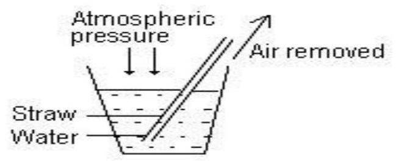
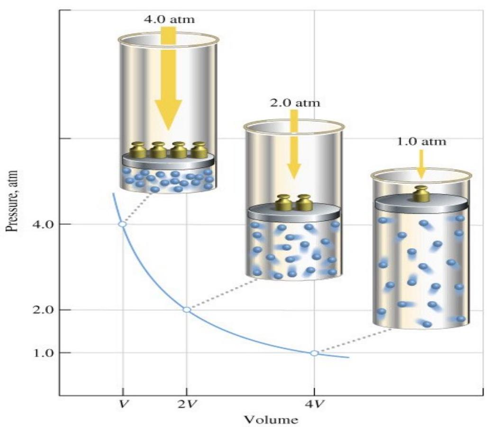
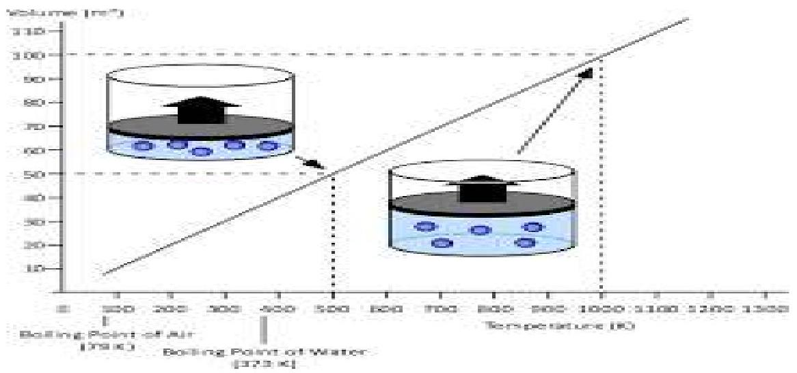
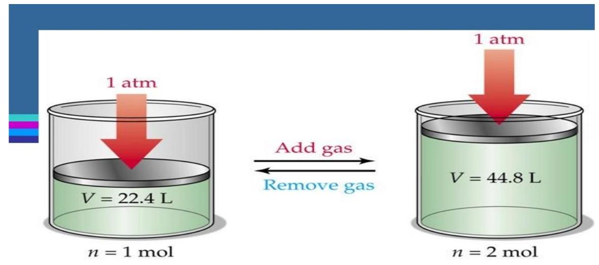

UNIT 14: GASES
Unit objectives
By the end of this unit, the learner should be able to:
- Define gas laws
- State the application of Graham's law of diffusion to nutrition and dietetics
14.1 Definition of terms
1 atm - this is the standard atmospheric pressure which is equal to 760 mmHg or 760 torr.
Kelvin
Absolute zero - this is the lowest attainable temperature i.e. $-273^{\circ} \mathrm{C}$ on the Celsius scale or 0 K on the Kelvin temperature scale.
Ideal gas is defined in which interactions between molecules are nonexistent and volume occupied by molecules is zero.
Elements that exist as gases include 5 of the diatomic molecules i.e. $\mathrm{H}_{2}, \mathrm{~N}_{2}, \mathrm{O}_{2}, \mathrm{~F}_{2}$, and $\mathrm{Cl}_{2}$, the oxygen allotrope ozone ($\mathrm{O}_{3}$) and the group 8A monoatomic gases (collectively referred to as noble gases) i.e. He (Helium), Ne (Neon), Ar (Argon), Kr (Krypton), Xe (Xenon) and Rn (Radon).
Several compounds also exist as gases in room temperature e.g. methane, carbon IV oxide, carbon monoxide, sulfur dioxide, ammonia, nitrogen dioxide, hydrogen sulfide etc.
Physical properties of gases
- Gases are always miscible
- Gases assume the volume and shape of the containers
- Gases are the most compressible of the states of matter
- Gases will mix evenly and completely when confined to the same container
- Gases have much lower densities than liquids and solids
Pressure of a Gas
Gases exert pressure on any surface with which they come in contact since gas molecules are constantly in motion.
A classic demonstration of atmospheric pressure: how are we able to drink a liquid through a straw?
a drinking straw works by decreasing the air pressure inside the straw (when we such thro it), the atmospheric pressure acting on the surface of the liquid which is now greater than that in the straw forces the liquid to rise up in the straw.
The diagram illustrates this concept.
Pressure can be defined as force per unit area. F/A. It is one of the most readily measureable properties of a gas.
Force is rate of change of momentum: $\mathrm{F}=\mathrm{ma}=\mathrm{d}(\mathrm{mv}) / \mathrm{dt}$.
The SI unit of pressure is the pascal (Pa). $1 \mathrm{~Pa}=1 \mathrm{~N} / \mathrm{m}^{2}$ where N (Newton) is the S.I. unit of force. E.g. Atmospheric pressure is the pressure exerted by the earth's atmosphere and is about 100,000 Pa which is measured using a barometer.
14.2 The Gas Laws
All gases exhibit similar physical properties even if their chemical properties differ widely. These properties can be summarized in a few simple laws. The variables set are pressure (P), volume (V), temperature (T in Kelvin) and number of molecules (n in moles) i.e. keep one (or two) of the variables constant and vary the others.
- Boyle's law
This investigates the pressure and volume relationship of a gas sample. The volume of a fixed amount of an ideal gas varies inversely with pressure at a constant temperature. A bicycle pump is a good example of Boyle's law. As the volume of the air trapped in the pump is reduced, its pressure goes up, and air is forced into the tire.
This law can be expressed as a mathematical expression as $\mathrm{P} \propto \frac{1}{V}$. The symbol $\propto$ means proportional to. We can change the symbol to an equals sign and write $P = k_{1} \times \frac{1}{V}$. Where $k_{1}$ is the proportionality constant. On rearranging the equation, we can now express Boyle's law as $\mathrm{PV} = k_{1}$.  - Charles' law
This investigates the temperature and volume relationship of a gas sample. At constant pressure, the volume of a gas sample expands when heated and contracts when cooled. Therefore, Charles' law states that, the volume of a fixed amount of gas maintained at a constant pressure is directly proportional to the absolute temperature of the gas. An ideal application for this gas law is the hot air balloon.
This law can be expressed as a mathematical expression as $\mathrm{V} \propto \mathrm{T}$. The symbol $\propto$ means proportional to. We can change the symbol to an equals sign and write $V = k_{2} \times T$. Where $k_{2}$ is the proportionality constant. On rearranging the equation, we can now express Charles' law as $\frac{V}{T} = k_{2}$.  - Avogadro's law
This investigates the volume and amount relationship of a gas sample. It states that, at constant pressure and temperature, the volume of a gas is directly proportional to the number of moles of the gas present.
This law can be expressed as a mathematical expression as $V \propto n$. The symbol $\propto$ means proportional to. We can change the symbol to an equals sign and write $V = k_{3} \times n$. Where $k_{3}$ is the proportionality constant. On rearranging the equation, we can now express Avogadro's law as $\frac{V}{n} = k_{3}$.  - Ideal gas law
An ideal gas is a hypothetical gas whose pressure-volume-temperature behavior can be completely accounted for the ideal gas equation. An ideal gas obeys all of the gas laws under all conditions, does not condense into a liquid when cooled. This gas law brings together the gas properties using the gas laws we have discussed above.
Boyle's law: $P \propto \frac{1}{V}$
Charles' law: $V \propto T$
Avogadro's law: $V \propto n$
These are combined to form a single main equation expressing the behavior of gases as $V \propto \frac{nT}{P}$. We can then change the $\propto$ symbol to an equals sign and write $V = R \frac{nT}{P}$.
on rearranging the equation, it is then expressed as $PV = nRT$.
Application: How much gas is required to fill a basketball or a light bulb?